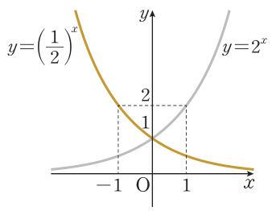
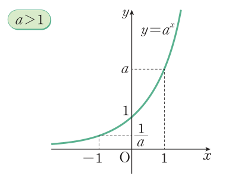
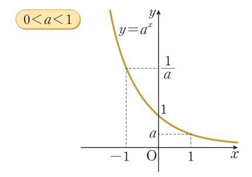
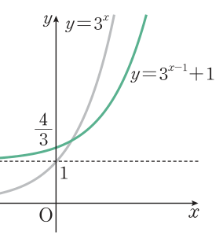
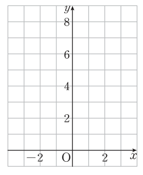

2026학년도 1학기 | 대수
작은 에너지의 빛이 단계마다 2배씩 증폭되어 강한 빛을 내는 현상을 '나노 입자 광사태 현상'이라 한다. 광자 1개를 나노 물질에 쏘았을 때 \(x\)단계에서의 광자의 개수를 \(y\)라 하자.
| \(x\) | 0 | 1 | 2 | 3 | 4 | 5 |
| \(y\) | 1 | 2 | 4 | 8 | 16 | 32 |
[개방형 발문] ① 표를 완성해 보자. ② \(x\)와 \(y\) 사이의 관계를 식으로 나타내 보자. ③ \(x\)가 \(1\)씩 늘 때 \(y\)는 어떻게 변하는가? 같은 '증가'라도 \(y=2x\)와 무엇이 다른가?
[연결] 표의 관계는 \(y=\) \(2^x\) 이다. 지난 시간에 지수를 실수까지 넓혔으므로 \(x\)가 \(\sqrt{2}\)처럼 정수가 아니어도 \(2^x\)의 값은 하나로 정해진다. 오늘은 ① 지수함수의 뜻, ② \(y=2^x\)와 \(y=\left(\frac12\right)^x\)의 그래프, ③ 지수함수의 성질, ④ 평행이동한 그래프, ⑤ 성질을 이용한 대소 비교와 최대·최소를 익힌다.
\(a\gt 0,\ a\ne 1\)일 때 실수 \(x\)에 \(a^x\)을 대응시키면 각 \(x\)에 대하여 \(a^x\)의 값이 하나로 정해지므로 함수이다. 실수 전체의 집합을 정의역으로 하는 함수
\(y=a^x\) (\(a\gt 0,\ a\ne 1\))
를 \(a\)를 밑으로 하는 지수함수라 한다. 예: \(y=2^x\)은 \(2\)를 밑으로 하는 지수함수.
왜 이 조건? 실수 지수의 정의에 따라 밑은 \(a\gt 0\)이어야 하고, \(a=1\)이면 \(y=1^x=1\)인 상수함수가 되므로 \(a\ne 1\).
🎯 구별하기
\(y=x^2\), \(y=x^{\frac12}\)은 변수가 밑에 있으므로 지수함수가 아니다. 변수가 지수에 있고 밑이 \(1\)이 아닌 양수인 상수일 때만 지수함수.
\(x=-3,-2,-1,0,1,2,3\)일 때 \(y=2^x\)의 값: \(\frac18,\ \frac14,\ \frac12,\ 1,\ 2,\ 4,\ 8\). 점을 찍고 매끄럽게 이으면 오른쪽 초록 곡선.
예제 1 \(y=\left(\frac12\right)^x=2^{-x}\)이므로 \(y=\left(\frac12\right)^x\)의 그래프는 \(y=2^x\)의 그래프를 \(y\)축에 대하여 대칭이동한 것이다 (주황 곡선).


1일 때 y=a^x 그래프 (교과서 44쪽 · 지수함수의 성질)" class="w-full max-w-xs mx-auto" />
기억 장치: \(a^0=1,\ a^1=a\)이므로 그래프는 항상 \((0,1)\)과 \((1,a)\)를 지난다. \(a\gt1\)일 때 \(x_1\lt x_2 \Leftrightarrow a^{x_1}\lt a^{x_2}\), \(0\lt a\lt1\)일 때 \(x_1\lt x_2 \Leftrightarrow a^{x_1}\gt a^{x_2}\).
함수 \(y=f(x-m)+n\)의 그래프는 \(y=f(x)\)의 그래프를 \(x\)축의 방향으로 \(m\)만큼, \(y\)축의 방향으로 \(n\)만큼 평행이동한 것이다.
예제 2 \(y=3^{x-1}+1\)의 그래프를 그리고 점근선을 구하시오.
\(y=3^x\)의 그래프를 \(x\)축 방향으로 \(1\)만큼, \(y\)축 방향으로 \(1\)만큼 평행이동. \(x=0\)이면 \(y=\frac13+1=\frac43\).
점근선: 직선 \(y=1\)
주의: 점근선 \(x\)축(\(y=0\))도 함께 \(y\)축 방향으로 \(n\)만큼 움직인다. \(x\)축 방향 이동은 점근선을 바꾸지 않는다.

예제 3 두 수 \(\sqrt[3]{2},\ \sqrt[9]{16}\)의 대소를 비교하시오.
\(\sqrt[3]{2}=2^{\frac13}\), \(\ \sqrt[9]{16}=(2^4)^{\frac19}=2^{\frac49}\) → 밑을 \(2\)로 통일
\(y=2^x\)은 증가하는 함수이고 \(\frac13\lt\frac49\)이므로 \(\ 2^{\frac13}\lt 2^{\frac49}\)
따라서 \(\sqrt[3]{2}\) \(\lt\) \(\sqrt[9]{16}\)
최대·최소: 닫힌 구간 \(\{x\mid p\le x\le q\}\)에서 지수함수는 증가(또는 감소)하므로 최댓값·최솟값은 양 끝 \(x=p,\ x=q\)에서 나온다. 밑이 \(1\)보다 큰지 작은지를 먼저 본다.
지수 계산을 되살리고 지수함수를 구별하며 기본 그래프를 그리는 단계

평행이동·증감을 이용해 점근선, 최대·최소, 대소를 판단하는 단계
"틀려야 는다!" 점근선과 지나는 점으로 식을 복원하기
점근선을 \(y=0\)이라고 습관처럼 쓰거나, \(x\)축 방향 이동량 \(a\)가 점근선을 바꾼다고 착각하기 쉽다. 점근선을 바꾸는 것은 \(y\)축 방향 이동량 \(b\)뿐이다.
📖 출처: 자체 출제 · 실수배와 평행이동의 관계 (유형)
난이도 ★★★ (6분) · 핵심: \(4\cdot 2^x=2^{x+2}\) — 상수배가 평행이동으로 바뀐다
📖 출처: 교과서 46쪽 · 수학 이야기 '지수함수로 인구수를 예측할 수 있다고?' (변형)
난이도 ★★★ (6분) · 핵심: 지수함수 모델에서는 같은 기간마다 같은 비율로 늘어난다
(1) \(\dfrac{P(t+50)}{P(t)}\)의 값은 \(t\)에 관계없이 일정함을 보이시오.
(2) 위 예측값을 이용하여 이 모델에서 인구가 약 몇 년마다 2배가 되는지 어림하시오.
(3) 실제 인구 증가가 이 모델과 달라지는 이유를 교과서 이야기에서 찾아 쓰시오.
스마트폰으로 우측 QR코드를 스캔하여, 아래 3가지 유형 중 하나 이상을 체크하고 통합 서술형으로 작성해 제출한다.